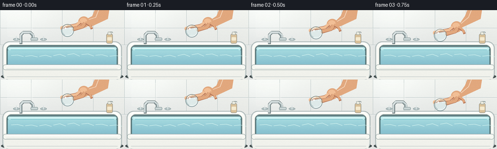
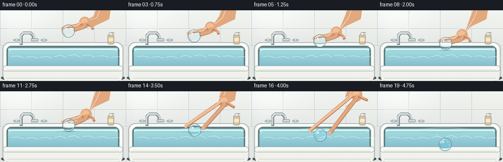

CODING AGENTS AS PIXEL WORLD MODELS
traex/GPT-5.6-Sol · phygen_010
点击播放 · 原生 RGB 像素
逐轮保存的候选
回放视频、检查图与代码变化。
每份候选均可单独播放。实际图片检查记录在下方工具轨迹中。
候选 01播放与检查图
点击播放 · 原生 RGB 像素


展开代码变化
--- 上一保存版本
+++ 本次保存版本
@@ -0,0 +1,267 @@
+from pathlib import Path
+import json, math
+import numpy as np
+from PIL import Image, ImageDraw, ImageFilter
+import cv2
+import artifact_io
+
+CASE_DIR = Path(__file__).resolve().parent
+spec = json.loads((CASE_DIR / "task_spec.json").read_text())
+W, H = int(spec["width"]), int(spec["height"])
+N = int(spec["frames"])
+S = 3
+WS, HS = W*S, H*S
+rng = np.random.default_rng(1037)
+
+def q(v): return int(round(v*S))
+def box(b): return tuple(q(v) for v in b)
+def pts(p): return [(q(x),q(y)) for x,y in p]
+def smooth(x):
+ x=max(0.0,min(1.0,x)); return x*x*(3-2*x)
+
+def line(draw, xy, fill, width=1, joint="curve"):
+ draw.line(pts(xy), fill=fill, width=max(1,q(width)), joint=joint)
+
+def ellipse(draw, b, fill=None, outline=None, width=1):
+ draw.ellipse(box(b), fill=fill, outline=outline, width=max(1,q(width)))
+
+def rr(draw, b, radius, fill=None, outline=None, width=1):
+ draw.rounded_rectangle(box(b), radius=q(radius), fill=fill, outline=outline, width=max(1,q(width)))
+
+def polygon(draw, p, fill): draw.polygon(pts(p), fill=fill)
+
+def make_background():
+ yy=np.arange(HS)[:,None]
+ xx=np.arange(WS)[None,:]
+ arr=np.zeros((HS,WS,3),dtype=np.float32)
+ # warm, softly lit glazed wall tiles
+ t=np.clip(yy/(74*S),0,1)
+ arr[:,:,0]=238-12*t + 5*(xx/WS)
+ arr[:,:,1]=241-12*t + 4*(xx/WS)
+ arr[:,:,2]=238-10*t + 2*(xx/WS)
+ # broad daylight glow from upper left
+ glow=np.exp(-(((xx-35*S)/(78*S))**2+((yy-3*S)/(57*S))**2))
+ arr += glow[:,:,None]*11
+ arr=np.uint8(np.clip(arr,0,255))
+ im=Image.fromarray(arr,'RGB').convert('RGBA')
+ d=ImageDraw.Draw(im,'RGBA')
+ # tile seams and soft edge glints
+ for x in [0,64,128,192,256]:
+ line(d,[(x,0),(x,72)],(175,188,187,62),.7)
+ if x not in (0,256): line(d,[(x+.7,0),(x+.7,72)],(255,255,255,95),.45)
+ for y in [37,72]:
+ line(d,[(0,y),(256,y)],(169,184,184,70),.8)
+ line(d,[(0,y+.8),(256,y+.8)],(255,255,255,100),.5)
+ # reflected rectangular window glow
+ glow_layer=Image.new('RGBA',(WS,HS),(0,0,0,0)); gd=ImageDraw.Draw(glow_layer,'RGBA')
+ rr(gd,(15,7,67,55),3,(255,255,250,22),(255,255,255,42),.7)
+ line(gd,[(41,8),(41,54)],(255,255,255,24),.6); line(gd,[(16,31),(66,31)],(255,255,255,24),.6)
+ im=Image.alpha_composite(im,glow_layer)
+ d=ImageDraw.Draw(im,'RGBA')
+ # floor/tub shadow
+ ellipse(d,(2,126,254,149),(66,77,77,42))
+ # tub outer shell
+ rr(d,(5,65,251,145),14,(224,229,226,255),(161,174,174,255),1.2)
+ rr(d,(8,67,248,139),12,(250,250,244,255),(255,255,255,230),1.0)
+ # inner basin dark lip
+ rr(d,(13,72,243,130),10,(83,117,121,255),(137,153,151,255),1.0)
+ # Water vertical gradient, clipped to rounded basin
+ water=np.zeros((HS,WS,4),dtype=np.uint8)
+ wy=np.arange(HS)[:,None]
+ dep=np.clip((wy-77*S)/(55*S),0,1)
+ water[:,:,0]=(170-55*dep).astype(np.uint8)
+ water[:,:,1]=(222-47*dep).astype(np.uint8)
+ water[:,:,2]=(226-30*dep).astype(np.uint8)
+ water[:,:,3]=255
+ waterim=Image.fromarray(water,'RGBA')
+ mask=Image.new('L',(WS,HS),0); md=ImageDraw.Draw(mask)
+ rr(md,(16,77,240,129),9,255)
+ im.alpha_composite(Image.composite(waterim,Image.new('RGBA',(WS,HS)),mask))
+ d=ImageDraw.Draw(im,'RGBA')
+ # calm surface band
+ rr(d,(16,76.7,240,82.5),4,(191,235,237,185),None)
+ line(d,[(20,79.4),(236,79.4)],(242,255,253,175),1.0)
+ line(d,[(22,82),(235,82)],(77,172,184,85),.65)
+ # subtle underwater bands and caustic curves
+ for k in range(8):
+ x=23+k*29
+ line(d,[(x,94+2*math.sin(k)),(x+13,92+2*math.sin(k+.5)),(x+25,96+math.sin(k))],(224,252,245,25),1.1)
+ # back and front porcelain rims
+ line(d,[(14,73),(20,68),(235,68),(243,74)],(255,255,252,240),3.0)
+ line(d,[(16,75),(240,75)],(154,169,168,135),.8)
+ # front apron occludes deep basin
+ polygon(d,[(7,116),(249,116),(247,143),(9,143)],(241,242,236,255))
+ rr(d,(6,112.8,250,124),5,(247,248,242,255),(159,174,173,255),1.0)
+ line(d,[(13,115),(243,115)],(255,255,255,235),1.7)
+ line(d,[(13,121.5),(242,121.5)],(192,201,198,130),.55)
+ # curved lower shading
+ line(d,[(14,138),(242,138)],(194,203,200,75),1)
+ # chrome faucet, behind subject
+ # shadow
+ line(d,[(43,70),(43,51),(48,46),(62,46),(68,52),(68,61)],(67,82,84,80),5.6)
+ line(d,[(43,69),(43,51),(48,46),(62,46),(68,52),(68,62)],(157,172,174,255),4.5)
+ line(d,[(42,68),(42,51),(47,45),(62,45),(69,51),(69,60)],(213,223,223,255),2.7)
+ line(d,[(43,52),(48,47),(61,47)],(255,255,255,190),.8)
+ rr(d,(63,57,78,63),2.4,(189,202,202,255),(119,138,140,255),.7)
+ line(d,[(65,59),(76,59)],(250,255,255,180),.7)
+ # handles
+ ellipse(d,(27,58,40,63),(183,197,198,255),(118,138,140,255),.7)
+ line(d,[(33.5,54),(33.5,62)],(221,229,229,255),2.1)
+ ellipse(d,(83,58,96,63),(183,197,198,255),(118,138,140,255),.7)
+ line(d,[(89.5,54),(89.5,62)],(221,229,229,255),2.1)
+ # small soap bottle on right rim
+ rr(d,(219,49,232,69),3,(217,193,154,255),(121,128,124,155),.7)
+ rr(d,(222,45,229,51),1,(235,235,224,255),(130,140,137,140),.6)
+ line(d,[(226,45),(231,45),(232,47)],(138,150,149,200),1.2)
+ rr(d,(221,56,230,63),1.5,(244,234,208,155),None)
+ return im
+
+BASE=make_background()
+
+def draw_ripples(im, idx, cx, surface=79.5):
+ if idx < 7: return
+ lay=Image.new('RGBA',(WS,HS),(0,0,0,0)); d=ImageDraw.Draw(lay,'RGBA')
+ age=idx-7
+ # Several very low-amplitude expanding waves; no splash for gentle placement.
+ for j in range(3):
+ a=age-j*2
+ if a < 0: continue
+ rx=10 + a*3.9
+ ry=1.7 + a*.46
+ alpha=max(18,150-a*10)
+ b=(cx-rx,surface-ry,cx+rx,surface+ry)
+ # rear arc and bright front arc
+ d.arc(box(b),180,355,fill=(222,255,252,alpha),width=q(.85))
+ d.arc(box(b),10,172,fill=(62,145,158,int(alpha*.62)),width=q(.65))
+ if 7 <= idx <= 12:
+ dip=1.0+0.30*(idx-7)
+ line(d,[(cx-11,surface),(cx-7,surface+dip),(cx,surface+dip+1),(cx+7,surface+dip),(cx+11,surface)],(65,151,163,150),.8)
+ line(d,[(cx-10,surface-.7),(cx-5,surface+.1),(cx+5,surface+.1),(cx+10,surface-.7)],(240,255,253,130),.65)
+ im.alpha_composite(lay)
+
+def draw_hand(im, idx, cy):
+ # Hand follows the ball while lowering it, then opens and withdraws up-right.
+ if idx <= 10:
+ retreat=0.0; hy=cy-18; hx=171
+ else:
+ retreat=smooth((idx-10)/6.5)
+ hy=(67-18)-43*retreat
+ hx=171+42*retreat
+ if idx >= 18: return
+ alpha=int(255*max(0,min(1,(18-idx)/2))) if idx>16 else 255
+ lay=Image.new('RGBA',(WS,HS),(0,0,0,0)); d=ImageDraw.Draw(lay,'RGBA')
+ skin=(226,168,126,alpha); light=(242,191,150,alpha); shade=(184,121,91,alpha)
+ # forearm tapers into the palm
+ polygon(d,[(226,-8),(198,-8),(190,12),(hx+8,hy-6),(hx-3,hy+9),(190,33),(222,18)],skin)
+ line(d,[(204,-3),(197,15),(hx+7,hy-3)],(248,202,164,int(alpha*.62)),1.4)
+ # palm
+ ellipse(d,(hx-10,hy-11,hx+13,hy+12),skin)
+ ellipse(d,(hx-7,hy-8,hx+8,hy+4),light)
+ open_amt=retreat*18
+ # index finger reaches around left side
+ p1=[(hx-5,hy+1),(hx-14,hy+7),(cx_global-12-open_amt*.52,cy-5-open_amt*.22)]
+ line(d,p1,shade,7.2); line(d,[(p1[0][0]-1,p1[0][1]-1),p1[1],(p1[2][0],p1[2][1]-1)],light,5.2)
+ ellipse(d,(p1[2][0]-3.0,p1[2][1]-3.7,p1[2][0]+3.0,p1[2][1]+3.7),light)
+ # thumb pinches right shoulder of ball
+ p2=[(hx+4,hy+3),(hx-1,hy+10),(cx_global+11+open_amt*.5,cy-2-open_amt*.12)]
+ line(d,p2,shade,8.2); line(d,[(p2[0][0],p2[0][1]-1),p2[1],(p2[2][0],p2[2][1]-1)],skin,6.2)
+ ellipse(d,(p2[2][0]-3.5,p2[2][1]-3.3,p2[2][0]+3.5,p2[2][1]+3.3),skin)
+ # two folded fingers visible behind
+ line(d,[(hx+6,hy+2),(hx+15,hy+8),(hx+18+open_amt*.35,hy+15-open_amt*.2)],shade,5.5)
+ line(d,[(hx+5,hy),(hx+14,hy+6),(hx+17+open_amt*.35,hy+13-open_amt*.2)],skin,4.1)
+ # nails on pinching fingertips
+ ellipse(d,(p2[2][0]-2.3,p2[2][1]-2.2,p2[2][0]+1.9,p2[2][1]+.5),(247,207,181,int(alpha*.8)))
+ im.alpha_composite(lay)
+
+def draw_glass_ball(im, idx, cx, cy, r=13):
+ # Refract the already rendered scene through a spherical lens.
+ arr=np.asarray(im.convert('RGB')).copy()
+ Cx,Cy,R=q(cx),q(cy),q(r)
+ x0=max(0,Cx-R-2); x1=min(WS,Cx+R+3); y0=max(0,Cy-R-2); y1=min(HS,Cy+R+3)
+ yy,xx=np.mgrid[y0:y1,x0:x1].astype(np.float32)
+ dx=xx-Cx; dy=yy-Cy; rho=np.sqrt(dx*dx+dy*dy)/R
+ inside=rho<=1
+ # Thick clear glass sphere: compressed mapping toward center and mild vertical inversion.
+ factor=.61+.22*np.minimum(rho,1)**2
+ mapx=Cx+dx*factor + 0.45*S*np.sin(dy/(7*S))
+ mapy=Cy+dy*factor
+ refr=cv2.remap(arr,mapx,mapy,cv2.INTER_LINEAR,borderMode=cv2.BORDER_REFLECT)
+ # Cool transmission tint, stronger underwater.
+ sub=np.clip((cy+r-79.5)/(2*r),0,1)
+ tint=np.array([2,8,10],np.float32)+sub*np.array([-5,7,12],np.float32)
+ refr=np.clip(refr.astype(np.float32)*(.96-sub*.035)+tint,0,255).astype(np.uint8)
+ patch=arr[y0:y1,x0:x1]
+ # Feathered antialiased mask
+ edge=np.clip((1-rho)*R/1.4,0,1)
+ a=(edge*inside)[...,None]
+ patch[:]=np.uint8(np.clip(patch*(1-a)+refr*a,0,255))
+ arr[y0:y1,x0:x1]=patch
+ im.paste(Image.fromarray(arr,'RGB').convert('RGBA'))
+ # Optical rim, internal shadow, and specular highlights.
+ lay=Image.new('RGBA',(WS,HS),(0,0,0,0)); d=ImageDraw.Draw(lay,'RGBA')
+ ellipse(d,(cx-r,cy-r,cx+r,cy+r),(180,231,238,18),(40,72,78,165),1.05)
+ ellipse(d,(cx-r+.9,cy-r+.9,cx+r-.9,cy+r-.9),None,(239,255,255,185),.75)
+ # dark lower/right total internal reflection
+ d.arc(box((cx-r+2,cy-r+2,cx+r-2,cy+r-2)),25,119,fill=(255,255,255,150),width=q(1.05))
+ d.arc(box((cx-r+1.8,cy-r+1.8,cx+r-1.8,cy+r-1.8)),120,248,fill=(55,91,98,105),width=q(1.1))
+ d.arc(box((cx-r+3.2,cy-r+3.2,cx+r-3.2,cy+r-3.2)),255,350,fill=(222,252,251,105),width=q(.75))
+ # crescent and pin-point studio reflections
+ d.arc(box((cx-r+3,cy-r+2,cx+r-5,cy+r-5)),180,272,fill=(255,255,255,220),width=q(1.3))
+ ellipse(d,(cx-r*.48,cy-r*.52,cx-r*.18,cy-r*.23),(255,255,255,205))
+ ellipse(d,(cx+r*.34,cy-r*.43,cx+r*.48,cy-r*.29),(255,255,255,150))
+ # faint focused caustic near the bottom of the sphere
+ ellipse(d,(cx-4,cy+r*.53,cx+5,cy+r*.76),(224,255,252,45))
+ im.alpha_composite(lay)
+ # The free surface cuts across the transparent sphere during entry.
+ if cy-r < 79.5 < cy+r:
+ lay2=Image.new('RGBA',(WS,HS),(0,0,0,0)); d2=ImageDraw.Draw(lay2,'RGBA')
+ half=math.sqrt(max(0,r*r-(79.5-cy)**2))
+ line(d2,[(cx-half,79.5),(cx-3,80.2),(cx+3,79.1),(cx+half,79.5)],(239,255,253,190),.85)
+ line(d2,[(cx-half,80.2),(cx+half,80.2)],(54,145,160,95),.55)
+ im.alpha_composite(lay2)
+
+def add_bubbles(im, idx, cx, cy):
+ if idx < 12: return
+ lay=Image.new('RGBA',(WS,HS),(0,0,0,0)); d=ImageDraw.Draw(lay,'RGBA')
+ age=idx-12
+ for j in range(min(4,1+age//2)):
+ bx=cx+(-1 if j%2 else 1)*(8+3*j)+1.2*math.sin(idx+j)
+ by=cy+8-j*6-age*(1.0+.12*j)
+ br=1.1+.25*(j%2)
+ ellipse(d,(bx-br,by-br,bx+br,by+br),(210,248,249,28),(236,255,255,130),.55)
+ im.alpha_composite(lay)
+
+def frame_at(i):
+ global cx_global
+ cx_global=139.0 + (0 if i<=10 else 1.4*math.sin((i-10)*.45))
+ if i <= 7:
+ cy=42 + 25*smooth(i/7)
+ elif i <= 10:
+ cy=67.0 + .18*math.sin(i)
+ else:
+ t=(i-10)/9
+ cy=67 + 41*(t**1.55)
+ im=BASE.copy()
+ draw_ripples(im,i,cx_global)
+ draw_hand(im,i,cy)
+ draw_glass_ball(im,i,cx_global,cy)
+ add_bubbles(im,i,cx_global,cy)
+ # Underwater veiling and moving caustic over the ball vicinity, very subtle.
+ if cy > 82:
+ lay=Image.new('RGBA',(WS,HS),(0,0,0,0)); d=ImageDraw.Draw(lay,'RGBA')
+ alpha=int(min(28,(cy-82)*.8))
+ ellipse(d,(cx_global-16,cy-15,cx_global+16,cy+16),(80,191,204,alpha))
+ im.alpha_composite(lay)
+ # downsample with high-quality antialias and add restrained photographic grain
+ rgb=im.convert('RGB').resize((W,H),Image.Resampling.LANCZOS)
+ a=np.asarray(rgb).astype(np.int16)
+ # fixed fine sensor grain does not distract or flicker strongly
+ local_rng=np.random.default_rng(8000+i)
+ grain=local_rng.normal(0,0.65,(H,W,1))
+ a=np.clip(a+grain,0,255).astype(np.uint8)
+ return a
+
+frames=np.stack([frame_at(i) for i in range(N)],axis=0)
+assert frames.shape==(N,H,W,3) and frames.dtype==np.uint8
+artifact_io.save(frames,CASE_DIR)
+print(f"saved {frames.shape} uint8 RGB to {CASE_DIR}")
候选 02播放与检查图
点击播放 · 原生 RGB 像素

展开代码变化
--- 上一保存版本
+++ 本次保存版本
@@ -231,6 +231,18 @@
ellipse(d,(bx-br,by-br,bx+br,by+br),(210,248,249,28),(236,255,255,130),.55)
im.alpha_composite(lay)
+def redraw_near_rim(im):
+ """The near porcelain rim is foreground geometry and occludes sunk objects."""
+ lay=Image.new('RGBA',(WS,HS),(0,0,0,0)); d=ImageDraw.Draw(lay,'RGBA')
+ # Only paint from the inner edge downward, preserving the visible water above it.
+ rr(d,(6,112.8,250,124),5,(247,248,242,255),(159,174,173,255),1.0)
+ # Flatten the top half of the rounded primitive to match the original near rim.
+ polygon(d,[(7,116),(249,116),(247,143),(9,143)],(241,242,236,255))
+ line(d,[(13,115),(243,115)],(255,255,255,235),1.7)
+ line(d,[(13,121.5),(242,121.5)],(192,201,198,130),.55)
+ line(d,[(14,138),(242,138)],(194,203,200,75),1)
+ im.alpha_composite(lay)
+
def frame_at(i):
global cx_global
cx_global=139.0 + (0 if i<=10 else 1.4*math.sin((i-10)*.45))
@@ -252,6 +264,10 @@
alpha=int(min(28,(cy-82)*.8))
ellipse(d,(cx_global-16,cy-15,cx_global+16,cy+16),(80,191,204,alpha))
im.alpha_composite(lay)
+ # From the final sinking frames onward, the ball reaches the near edge and
+ # correctly disappears behind the bathtub wall.
+ if cy + 13 > 112.8:
+ redraw_near_rim(im)
# downsample with high-quality antialias and add restrained photographic grain
rgb=im.convert('RGB').resize((W,H),Image.Resampling.LANCZOS)
a=np.asarray(rgb).astype(np.int16)
候选 03播放与检查图
可观测工具轨迹
实际执行的命令与返回图片。
命令 1exit 0
/bin/bash -lc "cat prompt.txt && printf '\\n--- GENERATION_RULES.md ---\\n' && cat GENERATION_RULES.md"
命令 2exit 0
/bin/bash -lc "cat task_spec.json && printf '\\n--- FILES ---\\n' && find . -maxdepth 2 -type f -printf '%p\\n' | sort"
命令 3exit 0
/bin/bash -lc "command -v blender || true; command -v ffmpeg || true; command -v python3 || true; python3 - <<'PY' mods=['numpy','PIL','cv2','imageio','matplotlib'] for m in mods: try: x=__import__(m); print(m, getattr(x,'__version__','ok')) except Exception as e: print(m,'NO',e) PY"
命令 4exit 0
/bin/bash -lc 'cat artifact_io.py'
命令 5exit 0
/bin/bash -lc "cat > generate.py <<'PY'
from pathlib import Path
import json, math
import numpy as np
from PIL import Image, ImageDraw, ImageFilter
import cv2
import artifact_io
CASE_DIR = Path(__file__).resolve().parent
spec = json.loads((CASE_DIR / \"task_spec.json\").read_text())
W, H = int(spec[\"width\"]), int(spec[\"height\"])
N = int(spec[\"frames\"])
S = 3
WS, HS = W*S, H*S
rng = np.random.default_rng(1037)
def q(v): return int(round(v*S))
def box(b): return tuple(q(v) for v in b)
def pts(p): return [(q(x),q(y)) for x,y in p]
def smooth(x):
x=max(0.0,min(1.0,x)); return x*x*(3-2*x)
def line(draw, xy, fill, width=1, joint=\"curve\"):
draw.line(pts(xy), fill=fill, width=max(1,q(width)), joint=joint)
def ellipse(draw, b, fill=None, outline=None, width=1):
draw.ellipse(box(b), fill=fill, outline=outline, width=max(1,q(width)))
def rr(draw, b, radius, fill=None, outline=None, width=1):
draw.rounded_rectangle(box(b), radius=q(radius), fill=fill, outline=outline, width=max(1,q(width)))
def polygon(draw, p, fill): draw.polygon(pts(p), fill=fill)
def make_background():
yy=np.arange(HS)[:,None]
xx=np.arange(WS)[None,:]
arr=np.zeros((HS,WS,3),dtype=np.float32)
# warm, softly lit glazed wall tiles
t=np.clip(yy/(74*S),0,1)
arr[:,:,0]=238-12*t + 5*(xx/WS)
arr[:,:,1]=241-12*t + 4*(xx/WS)
arr[:,:,2]=238-10*t + 2*(xx/WS)
# broad daylight glow from upper left
glow=np.exp(-(((xx-35*S)/(78*S))**2+((yy-3*S)/(57*S))**2))
arr += glow[:,:,None]*11
arr=np.uint8(np.clip(arr,0,255))
im=Image.fromarray(arr,'RGB').convert('RGBA')
d=ImageDraw.Draw(im,'RGBA')
# tile seams and soft edge glints
for x in [0,64,128,192,256]:
line(d,[(x,0),(x,72)],(175,188,187,62),.7)
if x not in (0,256): line(d,[(x+.7,0),(x+.7,72)],(255,255,255,95),.45)
for y in [37,72]:
line(d,[(0,y),(256,y)],(169,184,184,70),.8)
line(d,[(0,y+.8),(256,y+.8)],(255,255,255,100),.5)
# reflected rectangular window glow
glow_layer=Image.new('RGBA',(WS,HS),(0,0,0,0)); gd=ImageDraw.Draw(glow_layer,'RGBA')
rr(gd,(15,7,67,55),3,(255,255,250,22),(255,255,255,42),.7)
line(gd,[(41,8),(41,54)],(255,255,255,24),.6); line(gd,[(16,31),(66,31)],(255,255,255,24),.6)
im=Image.alpha_composite(im,glow_layer)
d=ImageDraw.Draw(im,'RGBA')
# floor/tub shadow
ellipse(d,(2,126,254,149),(66,77,77,42))
# tub outer shell
rr(d,(5,65,251,145),14,(224,229,226,255),(161,174,174,255),1.2)
rr(d,(8,67,248,139),12,(250,250,244,255),(255,255,255,230),1.0)
# inner basin dark lip
rr(d,(13,72,243,130),10,(83,117,121,255),(137,153,151,255),1.0)
# Water vertical gradient, clipped to rounded basin
water=np.zeros((HS,WS,4),dtype=np.uint8)
wy=np.arange(HS)[:,None]
dep=np.clip((wy-77*S)/(55*S),0,1)
water[:,:,0]=(170-55*dep).astype(np.uint8)
water[:,:,1]=(222-47*dep).astype(np.uint8)
water[:,:,2]=(226-30*dep).astype(np.uint8)
water[:,:,3]=255
waterim=Image.fromarray(water,'RGBA')
mask=Image.new('L',(WS,HS),0); md=ImageDraw.Draw(mask)
rr(md,(16,77,240,129),9,255)
im.alpha_composite(Image.composite(waterim,Image.new('RGBA',(WS,HS)),mask))
d=ImageDraw.Draw(im,'RGBA')
# calm surface band
rr(d,(16,76.7,240,82.5),4,(191,235,237,185),None)
line(d,[(20,79.4),(236,79.4)],(242,255,253,175),1.0)
line(d,[(22,82),(235,82)],(77,172,184,85),.65)
# subtle underwater bands and caustic curves
for k in range(8):
x=23+k*29
line(d,[(x,94+2*math.sin(k)),(x+13,92+2*math.sin(k+.5)),(x+25,96+math.sin(k))],(224,252,245,25),1.1)
# back and front porcelain rims
line(d,[(14,73),(20,68),(235,68),(243,74)],(255,255,252,240),3.0)
line(d,[(16,75),(240,75)],(154,169,168,135),.8)
# front apron occludes deep basin
polygon(d,[(7,116),(249,116),(247,143),(9,143)],(241,242,236,255))
rr(d,(6,112.8,250,124),5,(247,248,242,255),(159,174,173,255),1.0)
line(d,[(13,115),(243,115)],(255,255,255,235),1.7)
line(d,[(13,121.5),(242,121.5)],(192,201,198,130),.55)
# curved lower shading
line(d,[(14,138),(242,138)],(194,203,200,75),1)
# chrome faucet, behind subject
# shadow
line(d,[(43,70),(43,51),(48,46),(62,46),(68,52),(68,61)],(67,82,84,80),5.6)
line(d,[(43,69),(43,51),(48,46),(62,46),(68,52),(68,62)],(157,172,174,255),4.5)
line(d,[(42,68),(42,51),(47,45),(62,45),(69,51),(69,60)],(213,223,223,255),2.7)
line(d,[(43,52),(48,47),(61,47)],(255,255,255,190),.8)
rr(d,(63,57,78,63),2.4,(189,202,202,255),(119,138,140,255),.7)
line(d,[(65,59),(76,59)],(250,255,255,180),.7)
# handles
ellipse(d,(27,58,40,63),(183,197,198,255),(118,138,140,255),.7)
line(d,[(33.5,54),(33.5,62)],(221,229,229,255),2.1)
ellipse(d,(83,58,96,63),(183,197,198,255),(118,138,140,255),.7)
line(d,[(89.5,54),(89.5,62)],(221,229,229,255),2.1)
# small soap bottle on right rim
rr(d,(219,49,232,69),3,(217,193,154,255),(121,128,124,155),.7)
rr(d,(222,45,229,51),1,(235,235,224,255),(130,140,137,140),.6)
line(d,[(226,45),(231,45),(232,47)],(138,150,149,200),1.2)
rr(d,(221,56,230,63),1.5,(244,234,208,155),None)
return im
BASE=make_background()
def draw_ripples(im, idx, cx, surface=79.5):
if idx < 7: return
lay=Image.new('RGBA',(WS,HS),(0,0,0,0)); d=ImageDraw.Draw(lay,'RGBA')
age=idx-7
# Several very low-amplitude expanding waves; no splash for gentle placement.
for j in range(3):
a=age-j*2
if a < 0: continue
rx=10 + a*3.9
ry=1.7 + a*.46
alpha=max(18,150-a*10)
b=(cx-rx,surface-ry,cx+rx,surface+ry)
# rear arc and bright front arc
d.arc(box(b),180,355,fill=(222,255,252,alpha),width=q(.85))
d.arc(box(b),10,172,fill=(62,145,158,int(alpha*.62)),width=q(.65))
if 7 <= idx <= 12:
dip=1.0+0.30*(idx-7)
line(d,[(cx-11,surface),(cx-7,surface+dip),(cx,surface+dip+1),(cx+7,surface+dip),(cx+11,surface)],(65,151,163,150),.8)
line(d,[(cx-10,surface-.7),(cx-5,surface+.1),(cx+5,surface+.1),(cx+10,surface-.7)],(240,255,253,130),.65)
im.alpha_composite(lay)
def draw_hand(im, idx, cy):
# Hand follows the ball while lowering it, then opens and withdraws up-right.
if idx <= 10:
retreat=0.0; hy=cy-18; hx=171
else:
retreat=smooth((idx-10)/6.5)
hy=(67-18)-43*retreat
hx=171+42*retreat
if idx >= 18: return
alpha=int(255*max(0,min(1,(18-idx)/2))) if idx>16 else 255
lay=Image.new('RGBA',(WS,HS),(0,0,0,0)); d=ImageDraw.Draw(lay,'RGBA')
skin=(226,168,126,alpha); light=(242,191,150,alpha); shade=(184,121,91,alpha)
# forearm tapers into the palm
polygon(d,[(226,-8),(198,-8),(190,12),(hx+8,hy-6),(hx-3,hy+9),(190,33),(222,18)],skin)
line(d,[(204,-3),(197,15),(hx+7,hy-3)],(248,202,164,int(alpha*.62)),1.4)
# palm
ellipse(d,(hx-10,hy-11,hx+13,hy+12),skin)
ellipse(d,(hx-7,hy-8,hx+8,hy+4),light)
open_amt=retreat*18
# index finger reaches around left side
p1=[(hx-5,hy+1),(hx-14,hy+7),(cx_global-12-open_amt*.52,cy-5-open_amt*.22)]
line(d,p1,shade,7.2); line(d,[(p1[0][0]-1,p1[0][1]-1),p1[1],(p1[2][0],p1[2][1]-1)],light,5.2)
ellipse(d,(p1[2][0]-3.0,p1[2][1]-3.7,p1[2][0]+3.0,p1[2][1]+3.7),light)
# thumb pinches right shoulder of ball
p2=[(hx+4,hy+3),(hx-1,hy+10),(cx_global+11+open_amt*.5,cy-2-open_amt*.12)]
line(d,p2,shade,8.2); line(d,[(p2[0][0],p2[0][1]-1),p2[1],(p2[2][0],p2[2][1]-1)],skin,6.2)
ellipse(d,(p2[2][0]-3.5,p2[2][1]-3.3,p2[2][0]+3.5,p2[2][1]+3.3),skin)
# two folded fingers visible behind
line(d,[(hx+6,hy+2),(hx+15,hy+8),(hx+18+open_amt*.35,hy+15-open_amt*.2)],shade,5.5)
line(d,[(hx+5,hy),(hx+14,hy+6),(hx+17+open_amt*.35,hy+13-open_amt*.2)],skin,4.1)
# nails on pinching fingertips
ellipse(d,(p2[2][0]-2.3,p2[2][1]-2.2,p2[2][0]+1.9,p2[2][1]+.5),(247,207,181,int(alpha*.8)))
im.alpha_composite(lay)
def draw_glass_ball(im, idx, cx, cy, r=13):
# Refract the already rendered scene through a spherical lens.
arr=np.asarray(im.convert('RGB')).copy()
Cx,Cy,R=q(cx),q(cy),q(r)
x0=max(0,Cx-R-2); x1=min(WS,Cx+R+3); y0=max(0,Cy-R-2); y1=min(HS,Cy+R+3)
yy,xx=np.mgrid[y0:y1,x0:x1].astype(np.float32)
dx=xx-Cx; dy=yy-Cy; rho=np.sqrt(dx*dx+dy*dy)/R
inside=rho<=1
# Thick clear glass sphere: compressed mapping toward center and mild vertical inversion.
factor=.61+.22*np.minimum(rho,1)**2
mapx=Cx+dx*factor + 0.45*S*np.sin(dy/(7*S))
mapy=Cy+dy*factor
refr=cv2.remap(arr,mapx,mapy,cv2.INTER_LINEAR,borderMode=cv2.BORDER_REFLECT)
# Cool transmission tint, stronger underwater.
sub=np.clip((cy+r-79.5)/(2*r),0,1)
tint=np.array([2,8,10],np.float32)+sub*np.array([-5,7,12],np.float32)
refr=np.clip(refr.astype(np.float32)*(.96-sub*.035)+tint,0,255).astype(np.uint8)
patch=arr[y0:y1,x0:x1]
# Feathered antialiased mask
edge=np.clip((1-rho)*R/1.4,0,1)
a=(edge*inside)[...,None]
patch[:]=np.uint8(np.clip(patch*(1-a)+refr*a,0,255))
arr[y0:y1,x0:x1]=patch
im.paste(Image.fromarray(arr,'RGB').convert('RGBA'))
# Optical rim, internal shadow, and specular highlights.
lay=Image.new('RGBA',(WS,HS),(0,0,0,0)); d=ImageDraw.Draw(lay,'RGBA')
ellipse(d,(cx-r,cy-r,cx+r,cy+r),(180,231,238,18),(40,72,78,165),1.05)
ellipse(d,(cx-r+.9,cy-r+.9,cx+r-.9,cy+r-.9),None,(239,255,255,185),.75)
# dark lower/right total internal reflection
d.arc(box((cx-r+2,cy-r+2,cx+r-2,cy+r-2)),25,119,fill=(255,255,255,150),width=q(1.05))
d.arc(box((cx-r+1.8,cy-r+1.8,cx+r-1.8,cy+r-1.8)),120,248,fill=(55,91,98,105),width=q(1.1))
d.arc(box((cx-r+3.2,cy-r+3.2,cx+r-3.2,cy+r-3.2)),255,350,fill=(222,252,251,105),width=q(.75))
# crescent and pin-point studio reflections
d.arc(box((cx-r+3,cy-r+2,cx+r-5,cy+r-5)),180,272,fill=(255,255,255,220),width=q(1.3))
ellipse(d,(cx-r*.48,cy-r*.52,cx-r*.18,cy-r*.23),(255,255,255,205))
ellipse(d,(cx+r*.34,cy-r*.43,cx+r*.48,cy-r*.29),(255,255,255,150))
# faint focused caustic near the bottom of the sphere
ellipse(d,(cx-4,cy+r*.53,cx+5,cy+r*.76),(224,255,252,45))
im.alpha_composite(lay)
# The free surface cuts across the transparent sphere during entry.
if cy-r < 79.5 < cy+r:
lay2=Image.new('RGBA',(WS,HS),(0,0,0,0)); d2=ImageDraw.Draw(lay2,'RGBA')
half=math.sqrt(max(0,r*r-(79.5-cy)**2))
line(d2,[(cx-half,79.5),(cx-3,80.2),(cx+3,79.1),(cx+half,79.5)],(239,255,253,190),.85)
line(d2,[(cx-half,80.2),(cx+half,80.2)],(54,145,160,95),.55)
im.alpha_composite(lay2)
def add_bubbles(im, idx, cx, cy):
if idx < 12: return
lay=Image.new('RGBA',(WS,HS),(0,0,0,0)); d=ImageDraw.Draw(lay,'RGBA')
age=idx-12
for j in range(min(4,1+age//2)):
bx=cx+(-1 if j%2 else 1)*(8+3*j)+1.2*math.sin(idx+j)
by=cy+8-j*6-age*(1.0+.12*j)
br=1.1+.25*(j%2)
ellipse(d,(bx-br,by-br,bx+br,by+br),(210,248,249,28),(236,255,255,130),.55)
im.alpha_composite(lay)
def frame_at(i):
global cx_global
cx_global=139.0 + (0 if i<=10 else 1.4*math.sin((i-10)*.45))
if i <= 7:
cy=42 + 25*smooth(i/7)
elif i <= 10:
cy=67.0 + .18*math.sin(i)
else:
t=(i-10)/9
cy=67 + 41*(t**1.55)
im=BASE.copy()
draw_ripples(im,i,cx_global)
draw_hand(im,i,cy)
draw_glass_ball(im,i,cx_global,cy)
add_bubbles(im,i,cx_global,cy)
# Underwater veiling and moving caustic over the ball vicinity, very subtle.
if cy > 82:
lay=Image.new('RGBA',(WS,HS),(0,0,0,0)); d=ImageDraw.Draw(lay,'RGBA')
alpha=int(min(28,(cy-82)*.8))
ellipse(d,(cx_global-16,cy-15,cx_global+16,cy+16),(80,191,204,alpha))
im.alpha_composite(lay)
# downsample with high-quality antialias and add restrained photographic grain
rgb=im.convert('RGB').resize((W,H),Image.Resampling.LANCZOS)
a=np.asarray(rgb).astype(np.int16)
# fixed fine sensor grain does not distract or flicker strongly
local_rng=np.random.default_rng(8000+i)
grain=local_rng.normal(0,0.65,(H,W,1))
a=np.clip(a+grain,0,255).astype(np.uint8)
return a
frames=np.stack([frame_at(i) for i in range(N)],axis=0)
assert frames.shape==(N,H,W,3) and frames.dtype==np.uint8
artifact_io.save(frames,CASE_DIR)
print(f\"saved {frames.shape} uint8 RGB to {CASE_DIR}\")
PY
python3 generate.py"命令 6exit 0
/bin/bash -lc "python3 generate.py >/tmp/generate.log 2>&1; cat /tmp/generate.log; python3 - <<'PY'
from pathlib import Path
import json, numpy as np
from PIL import Image
p=Path('.')
s=json.loads((p/'task_spec.json').read_text())
z=np.load(p/'pixels.npz')['pixels']
print('pixels.npz:',z.shape,z.dtype,'expected',(s['height'],s['width'],s['frames']))
imgs=[np.asarray(Image.open(p/'frames'/f'{i:02d}.png')) for i in range(s['frames'])]
a=np.stack(imgs)
print('frames:',a.shape,a.dtype,'range',a.min(),a.max())
d=np.mean(np.abs(np.diff(a.astype(np.int16),axis=0)),axis=(1,2,3))
print('mean consecutive deltas:',np.round(d,2).tolist())
print('outputs:',[(x.name,x.stat().st_size) for x in [p/'pixels.npz',p/'index.html',p/'inspection.png',p/'transition_check.png']])
PY"命令 7exit 0
/bin/bash -lc 'python3 -m py_compile generate.py artifact_io.py && git status --short 2>/dev/null || true'
命令 8exit 0
/bin/bash -lc "grep -nE 'artifact_io.save|frames=np.stack|redraw_near_rim' generate.py"
命令 9exit 0
/bin/bash -lc "python3 generate.py > .tmp/generate.log 2>&1 && cat .tmp/generate.log && stat -c '%y %n' pixels.npz frames/19.png inspection.png index.html"
保存候选 3 份；完成命令 9 次；可验证图片返回 0 张。原始 API 响应与完整日志保留在本地。